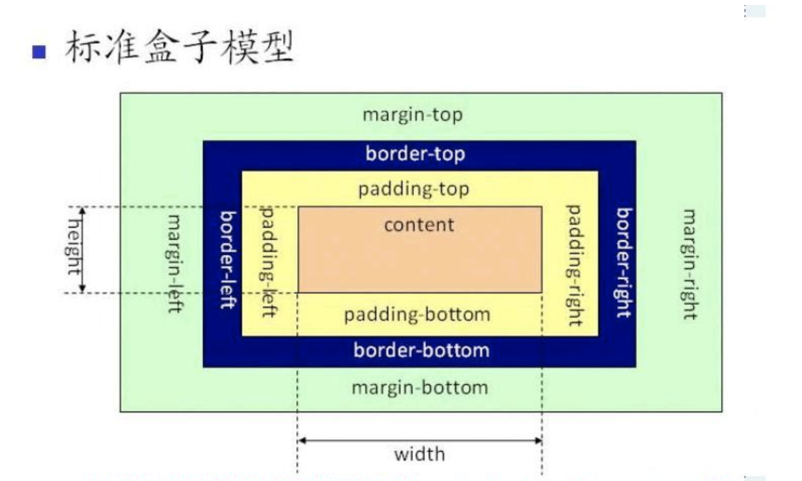

倾向于项目和开发者的习惯，并没有绝对的好坏之分
W3C的标准盒模型: width指content部分的宽度
IE的盒模型: width表示content+padding+border这三个部分的宽度
box-sizing的使用:
content-box 是W3C盒子模型
border-box 是IE盒子模型
关于：border-box 它的 width 和 height 属性包括内容，内边距和边框，但不包括外边距。
这里的维度计算为： width = border + padding + 内容的 width， height = border + padding + 内容的 height。
应用:一般在写页面的时候用这个属性就不会再考虑边框和内边距会改变整体所占宽度，即不用再根据盒子模型再去计算，省去很多麻烦，一般在做自适应的网页设计的时候用，用这个属性网页结构才不会被破坏。（盒模型原理）。
